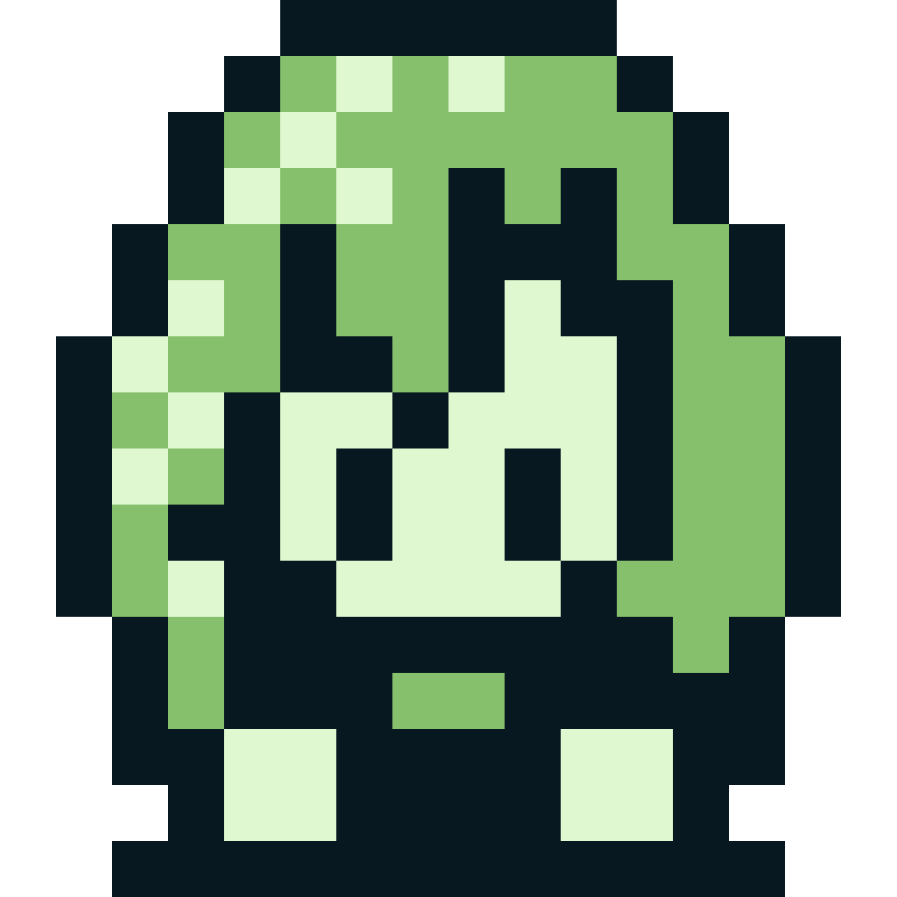
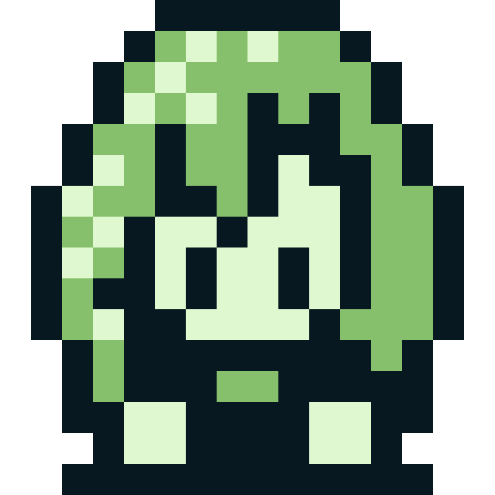
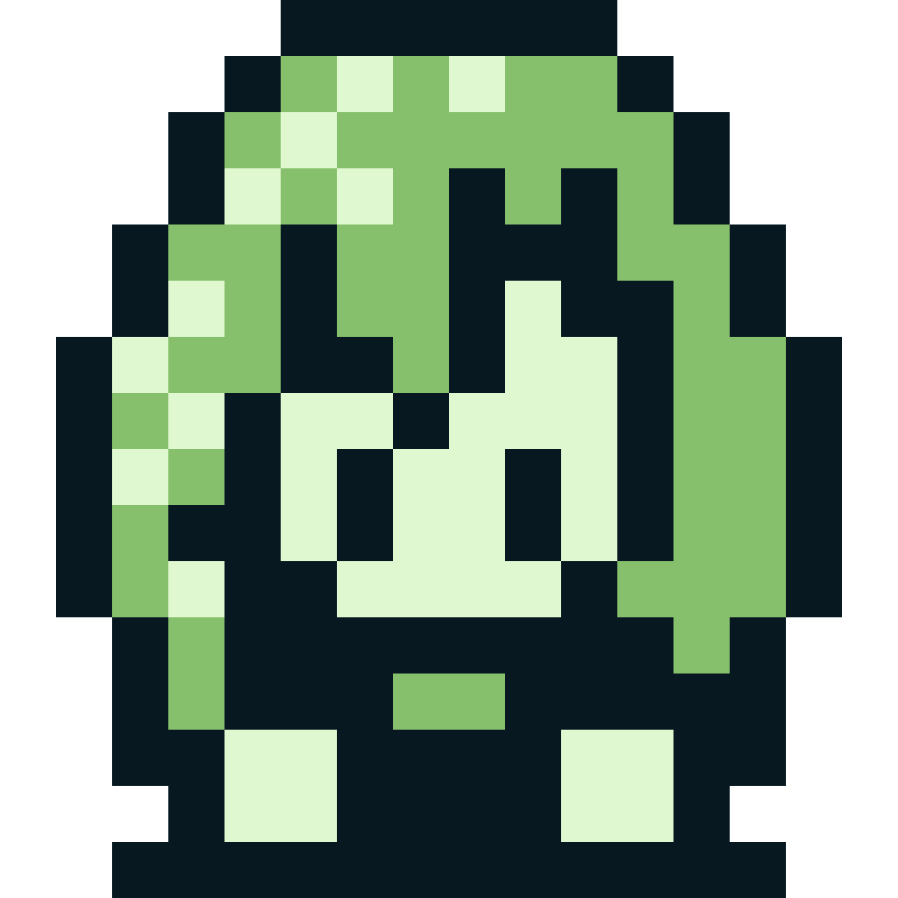
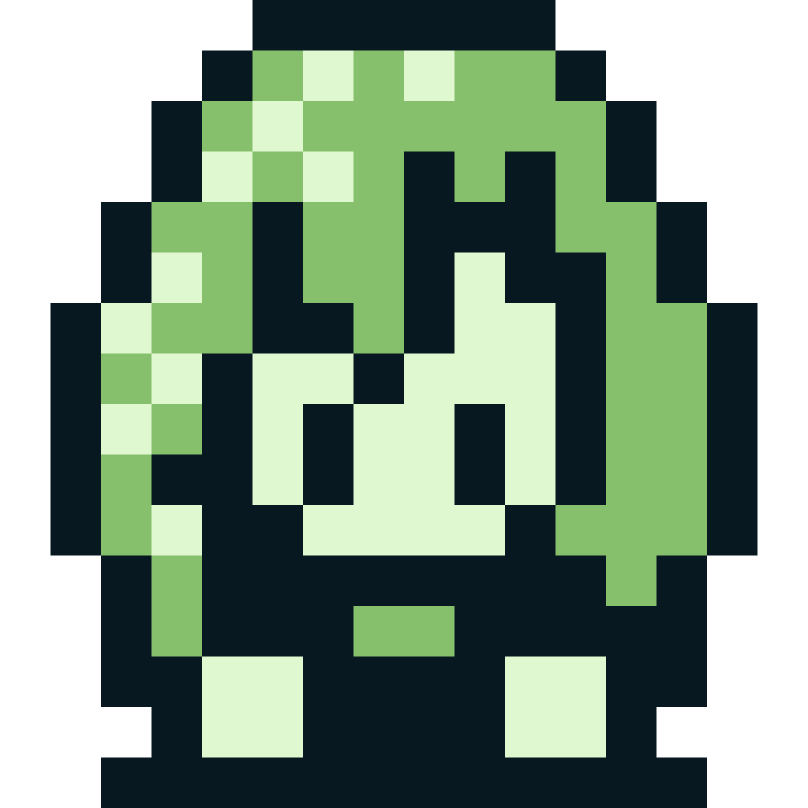

The Garenburg series spans multiple games and pieces of media, so this aims to help give a simple order for playing through if you want the full experience!
Please note that most of the games in the series are standalone, so you don't necessarily need to play by this order. You can go through things however you like and however you choose!
As of December 2024, there are two major games, one short spinoff, and a bunch of novellas and short stories that give more background on the world. You can find links to all of these via the projects page, or the novellas site.
Major Games
Spinoffs
In Development
Novellas
Other Works
If you want to go by a recommended order, here's what to play or read and what order to experience them! These are not necessarily in order of release.
Additional works you can read that aren't as important on any order are...
Fraudulent Family / Serene Seclusion (both novellas)
There are still a few other small works and the like not included in this list, but these are the major ones and ones recommended to experience. You can then optionally go and experience any of the other works not listed here that are in the overview.
In regards to Heinous History and Temporal Timeline, while they aren't necessarily spoilers, they do give a lot of extra context and information that may be best once you are done with everything else.
This isn't necessarily recommended, but if you really want to, you can do this for a release order. This list will also mention what is and isn't optional.
The main issue with this route are some things will make a little less sense or make other parts make too much sense just because of some delays in when some projects were released, so it's a bit of a rough way to do it. And the optional content does not help this either. However, you can do this if you'd like!
Some are very loosely connected like It Is Too Dark and Unicode but they are so loosely connected that you aren't going to miss anything, and are vastly different kinds of games. Twisted Mirror has no story at all, so it's even less relevant to trying to experience the plot. Going by the recommended order will give the best experience.